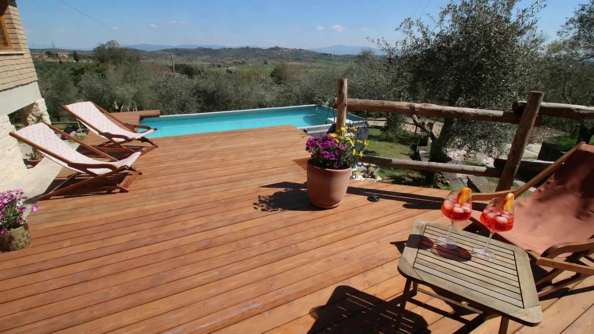

Immersa nelle dolci colline toscane, dove il tempo rallenta.
Tra gli ulivi, con deck in legno e vista aperta sulla Valdichiana.
Benvenuti a Happy Tuscany, la vostra oasi di pace immersa nelle dolci colline toscane. Un luogo dove il tempo rallenta, i profumi della natura si mescolano all'aroma del barbecue, e ogni alba si gode dalla terrazza oculatamente posizionata per offrire una vista mozzafiato.
La nostra casa vacanza è l'ideale per famiglie, coppie o piccoli gruppi che cercano relax, comfort e spazi all'aperto per cene, feste ed eventi.
Gli spazi esterni di Happy Tuscany offrono tutto il necessario per vivere la bellezza della campagna toscana in totale relax e convivialità. Una piscina panoramica privata, terrazza attrezzata con vista mozzafiato, barbecue, amaca e una grande zona dedicata a cene all'aperto, musica, videoproiezioni e karaoke.
Happy Tuscany dispone di tre camere: due matrimoniali con bagno privato e aria condizionata, di cui una con splendida vista panoramica; la terza con letti singoli unibili e bagno in corridoio. Nel salone, un grande divano letto king size è perfetto per bambini o coppie. Culla disponibile gratuitamente su richiesta.
Il grande salone è il vero cuore della casa: un ambiente caldo, accogliente e versatile, con due tavoloni in rovere per ospitare comodamente oltre 30 persone. La stufa a legna crea un'atmosfera calda e familiare, mentre il videoproiettore con maxi-schermo trasforma ogni serata in un vero effetto cinema.
Una cucina spaziosa e raffinata, realizzata su misura in rovere massello con piani in marmo e una pratica isola centrale. Completamente attrezzata con due frigoriferi, cucina a induzione, forno da 90 cm, lavastoviglie, microonde, macchina da caffè e boiler, per accogliere anche gruppi numerosi.
In posizione collinare, la casa offre una vista mozzafiato unica sul paesaggio toscano della Valdichiana.
Jacuzzi all'aperto e piscina privata con vista sulle colline toscane per i momenti di relax.
Barbecue in muratura spazioso e funzionale, perfetto per cene conviviali con amici e parenti.
Goditi una serata in completa privacy con musica e karaoke sotto le stelle!
Per chi vuole esplorare la zona, siamo vicini ai principali punti d'interesse della Toscana.
Goditi la cucina attrezzata, gli interni curati, la zona cinema, l'amaca, il Wi-Fi e l'aria condizionata.
Un'ampia area barbecue in muratura, perfetta per grigliate in compagnia con amici e familiari, tra profumi di brace, musica, karaoke, risate e cene sotto le stelle.
Su richiesta, organizziamo asado in stile argentino con griglia "estaca" per un'autentica esperienza conviviale intorno al fuoco, perfetta per eventi speciali o cene tra amici.
Concediti un momento di puro relax nell'idromassaggio all'aperto, affacciato sulle dolci colline toscane. La sera potrai goderti il calore dell'acqua sotto un cielo stellato.
Su richiesta, uno spazio dedicato allo smart working, con Wi-Fi veloce, buona illuminazione e tranquillità. Disponibile anche una tastiera pesata per una pausa creativa.
Lenzuola e asciugamani di qualità, sempre puliti e pronti all'uso.
Accesso flessibile anche nelle ore serali o notturne, con istruzioni personalizzate.
Su richiesta, completa di materasso e lenzuola.
Alta velocità 5G in tutti gli spazi interni ed esterni.
Macchina del caffè e boiler per acqua calda istantanea, h24.
Aria condizionata in camere e salone, riscaldamento a pellet e legna.